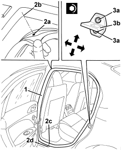

7010A10 REAR SIDE DOOR - ADJUST STRIKER AND ADAPT SEAL IF NECESSARY
- Path
- Procedures > 70 FITTINGS > 7010 PASSENGER COMPARTMENT REAR SIDE DOORS > 7010A REAR SIDE DOOR ASSEMBLY > 7010A10 REAR SIDE DOOR - ADJUST STRIKER AND ADAPT SEAL IF NECESSARY
- Kind
- repair procedure (removal / refitting; the operation number is the code)
- Applies to
- all engines; all production periods
- Interactive page
- https://sloeber94.github.io/elrnDB/alfa/159/en/#/939011158
Applies to: engines: 1.8, 1.9 JTS, 2.2 JTS, 3.2 JTS, 1.9 JTD 16V, 2.4 JTD 20V; all production periods
- Check that the front door is aligned, otherwise:
Op. 7010A10 REAR SIDE DOOR - ADJUST STRIKER AND ADAPT SEAL IF NECESSARY
- Open the rear door.
1. Check that the door seal is not damaged along its perimeter, otherwise replace.
2. Check that the upper reference (2a) coincides with the middle of angle (2b) and that joint (2c) coincides with the water drain groove (2d). Otherwise prise the seal out of the perimeter housing and refit, observing the markings.
3. If necessary, align bolts (3a) and move lock striker (3b) to the correct position using the slotted bolt holes. The arrows indicate the possible movements for the adjustment.
Tighten the bolts (3a) to the specified torque.
Component | Fastening | dia | Value (daNm) | Validity |
|---|---|---|---|---|
REAR DOOR OUTER TRIM | Bolt | M6x12 | 0.7 ÷ 1.1 |

Applies to: engines: 1.8, 1.9 JTS, 2.2 JTS, 3.2 JTS, 1.9 JTD 16V, 2.4 JTD 20V; all production periods
- Check that the stiker and the door lock are correctly matched and that the alignment is correct with the door closed.